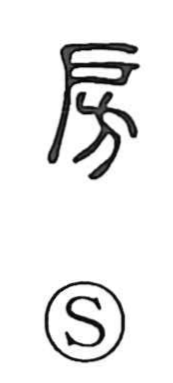

房

Kun: fusa, heya | On: bou
room ・ chamber ・ dwelling ・ tassel ・ cluster
Explanation
房 is a phono-semantic character built with 方 as its phonetic element, the graph that suggests spaces divided into square sections. The Shuowen glosses it as “a side room,” a compartment set along the flank of a building, and from there it came to mean an inner room or chamber and, by extension, a dwelling itself, as seen in compounds like 房舎 and 僧房. In Japanese it also preserves a concrete image of things gathered in bunches, yielding the kun reading fusa “tuft, tassel,” familiar in words such as 花房 and 乳房.